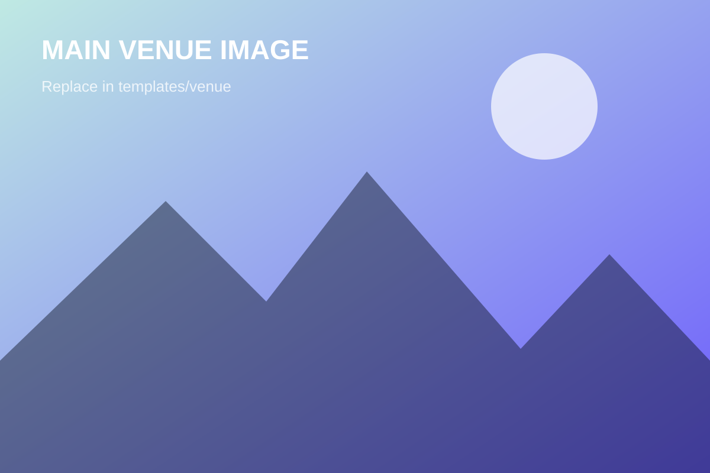
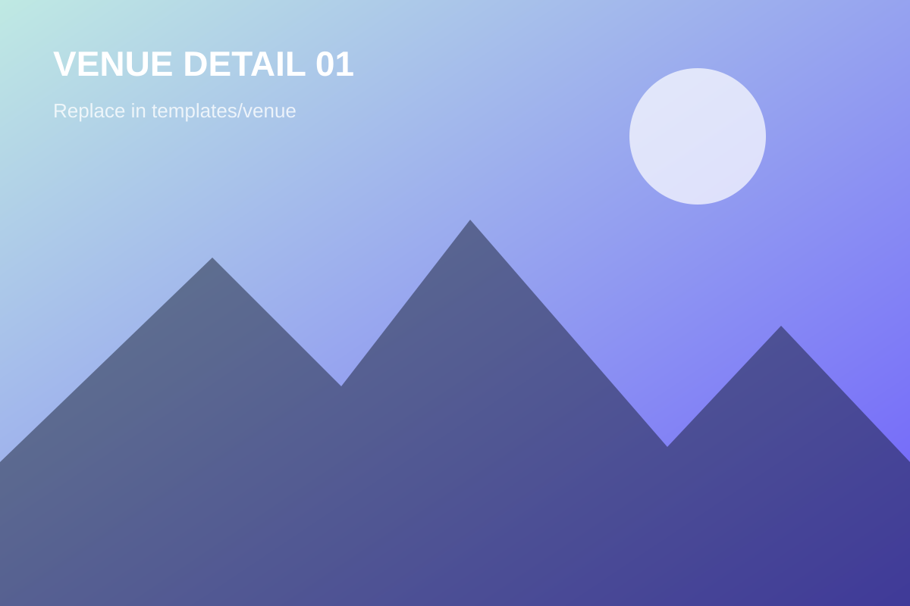

Venue & location.
RiSS 2026 takes place at the Mercure Salvador Rio Vermelho, situated on the seafront in Salvador's vibrant and historic Rio Vermelho neighborhood.


About the venue
Mercure Salvador Rio Vermelho
Overlooking the Atlantic Ocean in the cultural heart of Salvador, the venue combines modern conference infrastructure with an inspiring setting for intensive learning and collaboration.
The hotel offers air-conditioned auditorium and meeting rooms with full audiovisual capabilities, dedicated foyer areas for networking and coffee breaks, and high-speed Wi-Fi throughout the venue. On-site amenities include comfortable accommodation, an infinity pool with panoramic sea views, a fitness center, and the Casarão restaurant serving regional Bahian and international cuisine.
Located on Rua da Fonte do Boi in the charming Rio Vermelho district, participants are steps away from Salvador's renowned culinary scene, seaside promenades, and cultural landmarks.
Event address
Mercure Salvador Rio Vermelho
Rua da Fonte do Boi, 215 · Rio Vermelho
Salvador, BA · 41940-360
Brazil
How to get there
Travel made clear.
Salvador is one of Brazil's major transport hubs, easily accessible by air and interstate transit.
Practical information
Before you travel.
Tropical summer
December brings sunny summer days with pleasant coastal breezes. Temperatures average 25°C to 30°C (77°F–86°F). Light, breathable clothing is recommended.
Catering & cuisine
Coffee breaks and daily lunches are provided for registered participants. The Rio Vermelho neighborhood also offers diverse dining options within walking distance.
Participant checklist
Laptop and charger for interactive sessions, power adapter (Brazil uses Type N sockets; Salvador voltage is 127V), and official photo identification or passport.